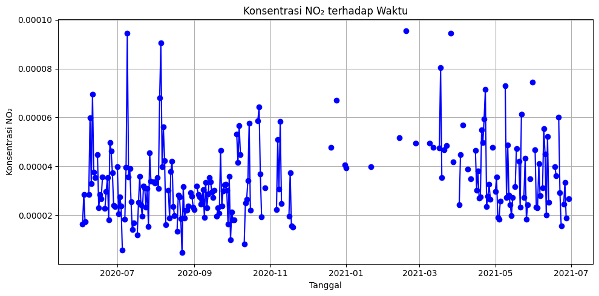
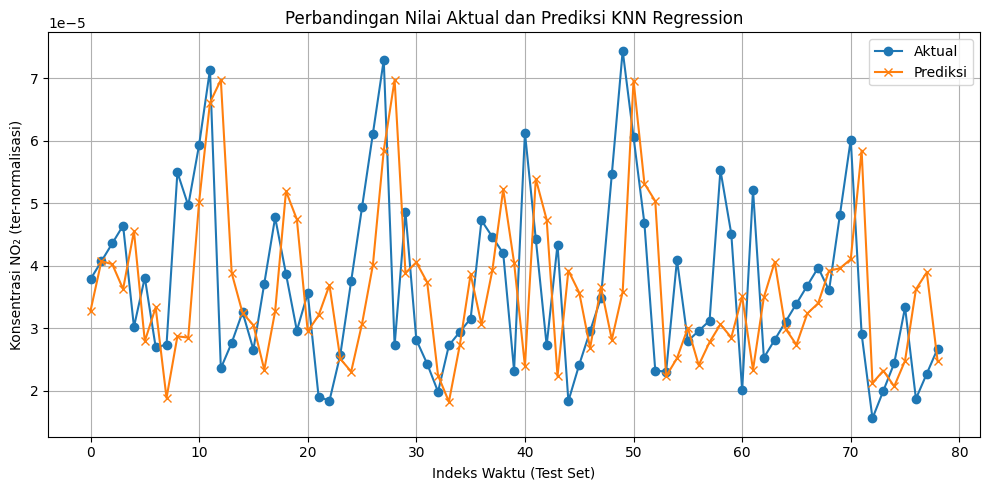
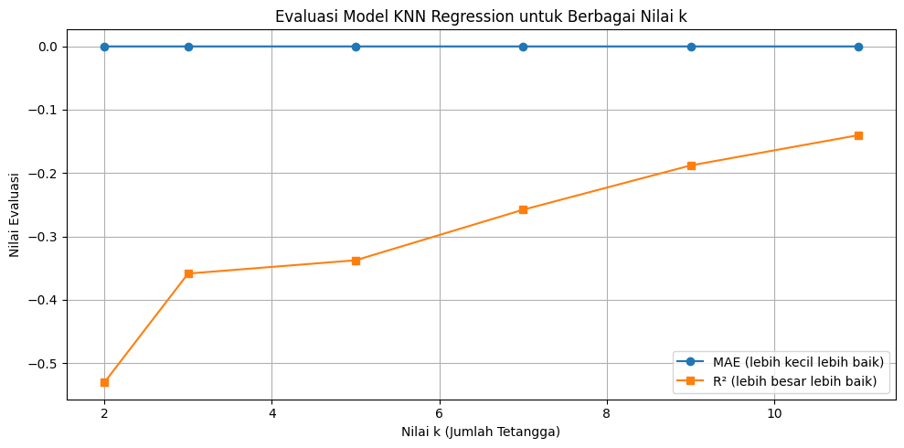

Eksplorasi Data (surabaya)#
import openeo
import pandas as pd
import matplotlib.pyplot as plt
import os
# 1. Koneksi ke Copernicus Data Space
connection = openeo.connect("openeo.dataspace.copernicus.eu").authenticate_oidc()
# 2. AOI: Surabaya
aoi = {
"type": "Polygon",
"coordinates": [
[
[112.72060203417936, -7.283148232556897],
[112.72060203417936, -7.3397802255418725],
[112.78011892090984, -7.3397802255418725],
[112.78011892090984, -7.283148232556897],
[112.72060203417936, -7.283148232556897],
]
],
}
# 3. Ambil data Sentinel-5P (band "NO2")
s5p = connection.load_collection(
"SENTINEL_5P_L2",
spatial_extent={
"west": 112.72060203417936,
"south": -7.3397802255418725,
"east": 112.78011892090984,
"north": -7.283148232556897,
},
temporal_extent=["2020-06-01", "2021-06-30"],
bands=["NO2"],
)
# 4. Mask nilai negatif (data invalid)
def mask_invalid(x):
return x < 0
s5p_masked = s5p.mask(s5p.apply(mask_invalid))
# 5. Agregasi temporal harian
daily_mean = s5p_masked.aggregate_temporal_period(period="day", reducer="mean")
# 6. Agregasi spasial (rata-rata dalam AOI)
daily_mean_aoi = daily_mean.aggregate_spatial(geometries=aoi, reducer="mean")
# 7. Jalankan batch job dan hasilkan file CSV
job = daily_mean_aoi.execute_batch(out_format="CSV")
# 8. Unduh hasil job
results = job.get_results()
results.download_files("no2_results_surabaya")
# 9. Baca file CSV hasil
for f in os.listdir("no2_results_surabaya"):
if f.endswith(".csv"):
df = pd.read_csv(os.path.join("no2_results_surabaya", f))
print("File ditemukan:", f)
break
# 10. Pastikan kolom tanggal benar
df["date"] = pd.to_datetime(df["date"])
# 11. Buat kolom bulan (YYYY-MM)
df["month"] = df["date"].dt.to_period("M")
# 12. Hitung rata-rata NO2 per bulan
df_monthly = df.groupby("month", as_index=False)["NO2"].mean()
# 13. Visualisasi hasil
plt.figure(figsize=(10,5))
plt.plot(df_monthly["month"].astype(str), df_monthly["NO2"], marker="o", color="blue", label="NO₂ Rata-rata per Bulan")
plt.title("Rata-rata Bulanan NO₂ (Sentinel-5P) di Surabaya")
plt.xlabel("Bulan")
plt.ylabel("Konsentrasi NO₂")
plt.xticks(rotation=45)
plt.grid(True)
plt.legend()
plt.tight_layout()
plt.show()
Authenticated using refresh token.
0:00:00 Job 'j-251102124652456a843881629e72681c': send 'start'
0:00:14 Job 'j-251102124652456a843881629e72681c': created (progress 0%)
Membaca Dataset#
import pandas as pd
# 1️⃣ Baca file hasil unduhan dari Copernicus
df = pd.read_csv("no2_results_surabaya/timeseries.csv")
# 2️⃣ Konversi kolom tanggal ke format datetime
df["date"] = pd.to_datetime(df["date"])
# 3️⃣ Urutkan berdasarkan tanggal
df = df.sort_values("date")
# 4️⃣ Tampilkan 5 baris pertama untuk memastikan hasilnya benar
print("Data awal dari Copernicus (5 baris teratas):")
print(df.head())
Data awal dari Copernicus (5 baris teratas):
date feature_index NO2
122 2020-05-31 00:00:00+00:00 0 NaN
120 2020-06-01 00:00:00+00:00 0 NaN
121 2020-06-02 00:00:00+00:00 0 NaN
282 2020-06-03 00:00:00+00:00 0 0.000016
278 2020-06-04 00:00:00+00:00 0 0.000028
Jumlah Missing Value#
import pandas as pd
import os
# 1️⃣ Baca file hasil dari folder no2_results_surabaya
for f in os.listdir("no2_results_surabaya"):
if f.endswith(".csv"):
df = pd.read_csv(os.path.join("no2_results_surabaya", f))
print("File ditemukan:", f)
break
# 2️⃣ Pastikan kolom tanggal dalam format datetime
df["date"] = pd.to_datetime(df["date"], errors="coerce")
# 3️⃣ Hitung jumlah & persentase missing value sebelum diperbaiki
missing_before = df["NO2"].isna().sum()
total_rows = len(df)
percent_before = (missing_before / total_rows) * 100
print(f"\nJumlah missing value sebelum diperbaiki: {missing_before} ({percent_before:.2f}%)")
# 4️⃣ Urutkan berdasarkan tanggal dan jadikan index waktu
df = df.sort_values("date")
df = df.set_index("date")
# 5️⃣ Interpolasi berdasarkan waktu dan isi sisa NaN
df["NO2"] = df["NO2"].interpolate(method="time")
df["NO2"] = df["NO2"].fillna(method="ffill").fillna(method="bfill")
# 6️⃣ Hitung ulang jumlah & persentase missing value setelah perbaikan
missing_after = df["NO2"].isna().sum()
percent_after = (missing_after / total_rows) * 100
print(f"Jumlah missing value setelah diperbaiki: {missing_after} ({percent_after:.2f}%)")
# 7️⃣ Kembalikan index ke kolom biasa
df = df.reset_index()
# 8️⃣ Simpan hasil ke file baru
output_file = "no2_surabaya_fixed.csv"
df.to_csv(output_file, index=False)
print(f"\nData hasil perbaikan disimpan ke: {output_file}")
# 9️⃣ Tampilkan sebagian data
print("\nData NO₂ setelah diperbaiki (5 baris teratas):")
print(df.head())
File ditemukan: timeseries.csv
Jumlah missing value sebelum diperbaiki: 184 (46.58%)
Jumlah missing value setelah diperbaiki: 0 (0.00%)
Data hasil perbaikan disimpan ke: no2_surabaya_fixed.csv
Data NO₂ setelah diperbaiki (5 baris teratas):
date feature_index NO2
0 2020-05-31 00:00:00+00:00 0 0.000016
1 2020-06-01 00:00:00+00:00 0 0.000016
2 2020-06-02 00:00:00+00:00 0 0.000016
3 2020-06-03 00:00:00+00:00 0 0.000016
4 2020-06-04 00:00:00+00:00 0 0.000028
C:\Users\Jordan\AppData\Local\Temp\ipykernel_27392\3473750242.py:26: FutureWarning: Series.fillna with 'method' is deprecated and will raise in a future version. Use obj.ffill() or obj.bfill() instead.
df["NO2"] = df["NO2"].fillna(method="ffill").fillna(method="bfill")
Statistik deskriptif
desc = df.describe()
desc
| feature_index | NO2 | |
|---|---|---|
| count | 395.0 | 211.000000 |
| mean | 0.0 | 0.000034 |
| std | 0.0 | 0.000016 |
| min | 0.0 | 0.000005 |
| 25% | 0.0 | 0.000023 |
| 50% | 0.0 | 0.000030 |
| 75% | 0.0 | 0.000042 |
| max | 0.0 | 0.000096 |
Tabel Informasi Dataset#
info_table = pd.DataFrame({
"Kolom": df.columns,
"Tipe Data": df.dtypes.astype(str),
"Jumlah Data Tidak Kosong": len(df) - df.isna().sum(),
"Jumlah Missing": df.isna().sum()
})
info_table
| Kolom | Tipe Data | Jumlah Data Tidak Kosong | Jumlah Missing | |
|---|---|---|---|---|
| date | date | datetime64[ns, UTC] | 395 | 0 |
| feature_index | feature_index | int64 | 395 | 0 |
| NO2 | NO2 | float64 | 211 | 184 |
Visualisasi Time Series NO₂#
import pandas as pd
import matplotlib.pyplot as plt
# 1️⃣ Baca data hasil Copernicus
df = pd.read_csv("no2_results_surabaya/timeseries.csv")
# 2️⃣ Konversi kolom tanggal ke format datetime
df["date"] = pd.to_datetime(df["date"])
# 3️⃣ Urutkan berdasarkan tanggal
df = df.sort_values("date")
# 4️⃣ Plot hasil
plt.figure(figsize=(10, 5))
plt.plot(df['date'], df['NO2'], marker='o', linestyle='-', color='blue')
plt.title("Konsentrasi NO₂ terhadap Waktu")
plt.xlabel("Tanggal")
plt.ylabel("Konsentrasi NO₂")
plt.grid(True)
plt.tight_layout()
plt.show()

# 1️⃣ Baca data hasil perbaikan missing value
data = pd.read_csv("no2_surabaya_fixed.csv")
# 2️⃣ Pastikan kolom tanggal berurutan
data["date"] = pd.to_datetime(data["date"])
data = data.sort_values("date").reset_index(drop=True)
# 3️⃣ Tentukan banyaknya lag (misalnya 3 hari sebelumnya)
lag = 3
# 4️⃣ Bentuk fitur lag untuk data supervised
for i in range(1, lag + 1):
data[f"NO2_t-{i}"] = data["NO2"].shift(i)
# 5️⃣ Hapus baris yang memiliki NaN akibat shift
data_supervised = data.dropna().reset_index(drop=True)
# 6️⃣ Simpan hasilnya ke CSV baru
data_supervised.to_csv("no2_surabaya_supervised.csv", index=False)
# 7️⃣ Tampilkan hasil awal
print("Data supervised (5 baris teratas):")
print(data_supervised.head())
Data supervised (5 baris teratas):
date feature_index NO2 NO2_t-1 NO2_t-2 \
0 2020-06-03 00:00:00+00:00 0 0.000016 0.000016 0.000016
1 2020-06-04 00:00:00+00:00 0 0.000028 0.000016 0.000016
2 2020-06-05 00:00:00+00:00 0 0.000017 0.000028 0.000016
3 2020-06-06 00:00:00+00:00 0 0.000021 0.000017 0.000028
4 2020-06-07 00:00:00+00:00 0 0.000025 0.000021 0.000017
NO2_t-3
0 0.000016
1 0.000016
2 0.000016
3 0.000016
4 0.000028
import pandas as pd
from sklearn.preprocessing import StandardScaler
# 1️⃣ Baca data supervised hasil langkah sebelumnya
data = pd.read_csv("no2_surabaya_supervised.csv")
# 2️⃣ Pisahkan fitur dan target
X = data[["NO2_t-1", "NO2_t-2", "NO2_t-3"]]
y = data["NO2"]
# 3️⃣ Normalisasi fitur (gunakan StandardScaler)
scaler = StandardScaler()
X_scaled = scaler.fit_transform(X)
# 4️⃣ Bentuk kembali ke DataFrame agar lebih rapi
X_scaled_df = pd.DataFrame(X_scaled, columns=X.columns)
# 5️⃣ Gabungkan kembali dengan target
data_normalized = pd.concat([X_scaled_df, y], axis=1)
# 6️⃣ Simpan hasilnya ke CSV
data_normalized.to_csv("no2_surabaya_normalized.csv", index=False)
# 7️⃣ Tampilkan hasil
print("Data setelah normalisasi (5 baris teratas):")
print(data_normalized.head())
Data setelah normalisasi (5 baris teratas):
NO2_t-1 NO2_t-2 NO2_t-3 NO2
0 -1.332805 -1.330196 -1.329157 0.000016
1 -1.332805 -1.330196 -1.329157 0.000028
2 -0.559284 -1.330196 -1.329157 0.000017
3 -1.268940 -0.557584 -1.329157 0.000021
4 -1.032599 -1.266405 -0.556922 0.000025
import pandas as pd
from sklearn.model_selection import train_test_split
from sklearn.neighbors import KNeighborsRegressor
from sklearn.metrics import mean_absolute_error, r2_score
# 1️⃣ Baca data hasil normalisasi
data = pd.read_csv("no2_surabaya_normalized.csv")
# 2️⃣ Pisahkan fitur dan target
X = data[["NO2_t-1", "NO2_t-2", "NO2_t-3"]]
y = data["NO2"]
# 3️⃣ Bagi data jadi train & test (misal 80% train, 20% test)
X_train, X_test, y_train, y_test = train_test_split(X, y, test_size=0.2, random_state=42, shuffle=False)
# 4️⃣ Buat model KNN Regressor (contoh: k=3)
knn = KNeighborsRegressor(n_neighbors=3)
# 5️⃣ Latih model
knn.fit(X_train, y_train)
# 6️⃣ Prediksi data test
y_pred = knn.predict(X_test)
# 7️⃣ Evaluasi performa model
mae = mean_absolute_error(y_test, y_pred)
r2 = r2_score(y_test, y_pred)
# 8️⃣ Tampilkan hasil
print("Hasil Evaluasi Model K-NN Regression")
print("------------------------------------")
print(f"Mean Absolute Error (MAE): {mae:.6f}")
print(f"R-squared (R²): {r2:.6f}")
print("\nPerbandingan nilai aktual vs prediksi:")
hasil = pd.DataFrame({"Aktual": y_test.values, "Prediksi": y_pred})
print(hasil.head())
Hasil Evaluasi Model K-NN Regression
------------------------------------
Mean Absolute Error (MAE): 0.000013
R-squared (R²): -0.358745
Perbandingan nilai aktual vs prediksi:
Aktual Prediksi
0 0.000038 0.000033
1 0.000041 0.000041
2 0.000044 0.000040
3 0.000046 0.000036
4 0.000030 0.000046
import matplotlib.pyplot as plt
import pandas as pd
# Jika belum ada hasilnya, baca ulang data prediksi & aktual
hasil = pd.DataFrame({
"Aktual": y_test.values,
"Prediksi": y_pred
}).reset_index(drop=True)
# 1️⃣ Plot hasil prediksi vs aktual
plt.figure(figsize=(10, 5))
plt.plot(hasil["Aktual"], label="Aktual", marker="o")
plt.plot(hasil["Prediksi"], label="Prediksi", marker="x")
plt.title("Perbandingan Nilai Aktual dan Prediksi KNN Regression")
plt.xlabel("Indeks Waktu (Test Set)")
plt.ylabel("Konsentrasi NO₂ (ter-normalisasi)")
plt.legend()
plt.grid(True)
plt.tight_layout()
plt.show()
# 2️⃣ (Opsional) Simpan hasil ke file CSV
hasil.to_csv("hasil_prediksi_knn.csv", index=False)
print("✅ Visualisasi selesai dan hasil disimpan ke 'hasil_prediksi_knn.csv'")

✅ Visualisasi selesai dan hasil disimpan ke 'hasil_prediksi_knn.csv'
import pandas as pd
from sklearn.model_selection import train_test_split
from sklearn.neighbors import KNeighborsRegressor
from sklearn.metrics import mean_absolute_error, r2_score
import matplotlib.pyplot as plt
# 1️⃣ Baca data hasil normalisasi
data = pd.read_csv("no2_surabaya_normalized.csv")
# 2️⃣ Pisahkan fitur & target
X = data[["NO2_t-1", "NO2_t-2", "NO2_t-3"]]
y = data["NO2"]
# 3️⃣ Bagi data jadi train dan test
X_train, X_test, y_train, y_test = train_test_split(X, y, test_size=0.2, shuffle=False)
# 4️⃣ Uji beberapa nilai k
k_values = [2, 3, 5, 7, 9, 11]
mae_scores = []
r2_scores = []
for k in k_values:
knn = KNeighborsRegressor(n_neighbors=k)
knn.fit(X_train, y_train)
y_pred = knn.predict(X_test)
mae = mean_absolute_error(y_test, y_pred)
r2 = r2_score(y_test, y_pred)
mae_scores.append(mae)
r2_scores.append(r2)
# 5️⃣ Tampilkan hasil evaluasi untuk tiap k
print("Evaluasi Model untuk Berbagai Nilai k:")
print("--------------------------------------")
for i in range(len(k_values)):
print(f"k = {k_values[i]} --> MAE = {mae_scores[i]:.6f} | R² = {r2_scores[i]:.6f}")
# 6️⃣ Plot hasil evaluasi
plt.figure(figsize=(10,5))
plt.plot(k_values, mae_scores, marker='o', label="MAE (lebih kecil lebih baik)")
plt.plot(k_values, r2_scores, marker='s', label="R² (lebih besar lebih baik)")
plt.title("Evaluasi Model KNN Regression untuk Berbagai Nilai k")
plt.xlabel("Nilai k (Jumlah Tetangga)")
plt.ylabel("Nilai Evaluasi")
plt.legend()
plt.grid(True)
plt.tight_layout()
plt.show()
Evaluasi Model untuk Berbagai Nilai k:
--------------------------------------
k = 2 --> MAE = 0.000013 | R² = -0.530775
k = 3 --> MAE = 0.000013 | R² = -0.358745
k = 5 --> MAE = 0.000012 | R² = -0.337788
k = 7 --> MAE = 0.000012 | R² = -0.257969
k = 9 --> MAE = 0.000011 | R² = -0.188026
k = 11 --> MAE = 0.000011 | R² = -0.140302

import pandas as pd
from sklearn.neighbors import KNeighborsRegressor
# 1️⃣ Baca data normalisasi dan model terbaik dari hasil sebelumnya
data = pd.read_csv("no2_surabaya_normalized.csv")
# 2️⃣ Pisahkan fitur dan target
X = data[["NO2_t-1", "NO2_t-2", "NO2_t-3"]]
y = data["NO2"]
# 3️⃣ Gunakan k terbaik (misalnya k=5 dari hasil uji sebelumnya)
model = KNeighborsRegressor(n_neighbors=5)
model.fit(X, y)
# 4️⃣ Siapkan data awal untuk prediksi ke depan
last_values = data[["NO2_t-1", "NO2_t-2", "NO2_t-3"]].iloc[-1].values
forecast_days = 7 # jumlah hari ke depan yang ingin diprediksi
predictions = []
for _ in range(forecast_days):
# Prediksi nilai berikutnya
next_pred = model.predict([last_values])[0]
predictions.append(next_pred)
# Geser nilai lag (misal: t-3 ← t-2, t-2 ← t-1, t-1 ← prediksi)
last_values = [next_pred, last_values[0], last_values[1]]
# 5️⃣ Simpan hasil prediksi ke DataFrame
forecast_df = pd.DataFrame({
"Hari_ke": range(1, forecast_days + 1),
"Prediksi_NO2": predictions
})
# 6️⃣ Tampilkan hasil prediksi
print("📈 Prediksi NO₂ untuk 7 Hari ke Depan:")
print(forecast_df)
# 7️⃣ (Opsional) Simpan ke file CSV
forecast_df.to_csv("no2_surabaya_forecast.csv", index=False)
print("\nHasil prediksi disimpan sebagai 'no2_surabaya_forecast.csv'")
📈 Prediksi NO₂ untuk 7 Hari ke Depan:
Hari_ke Prediksi_NO2
0 1 0.000025
1 2 0.000033
2 3 0.000028
3 4 0.000039
4 5 0.000039
5 6 0.000039
6 7 0.000039
Hasil prediksi disimpan sebagai 'no2_surabaya_forecast.csv'
c:\Users\Jordan\AppData\Local\Programs\Python\Python39\lib\site-packages\sklearn\base.py:493: UserWarning: X does not have valid feature names, but KNeighborsRegressor was fitted with feature names
warnings.warn(
c:\Users\Jordan\AppData\Local\Programs\Python\Python39\lib\site-packages\sklearn\base.py:493: UserWarning: X does not have valid feature names, but KNeighborsRegressor was fitted with feature names
warnings.warn(
c:\Users\Jordan\AppData\Local\Programs\Python\Python39\lib\site-packages\sklearn\base.py:493: UserWarning: X does not have valid feature names, but KNeighborsRegressor was fitted with feature names
warnings.warn(
c:\Users\Jordan\AppData\Local\Programs\Python\Python39\lib\site-packages\sklearn\base.py:493: UserWarning: X does not have valid feature names, but KNeighborsRegressor was fitted with feature names
warnings.warn(
c:\Users\Jordan\AppData\Local\Programs\Python\Python39\lib\site-packages\sklearn\base.py:493: UserWarning: X does not have valid feature names, but KNeighborsRegressor was fitted with feature names
warnings.warn(
c:\Users\Jordan\AppData\Local\Programs\Python\Python39\lib\site-packages\sklearn\base.py:493: UserWarning: X does not have valid feature names, but KNeighborsRegressor was fitted with feature names
warnings.warn(
c:\Users\Jordan\AppData\Local\Programs\Python\Python39\lib\site-packages\sklearn\base.py:493: UserWarning: X does not have valid feature names, but KNeighborsRegressor was fitted with feature names
warnings.warn(
import pandas as pd
# 1️⃣ Baca file hasil unduhan dari Copernicus
df = pd.read_csv("no2_results_surabaya/timeseries.csv")
# 2️⃣ Konversi kolom tanggal ke format datetime
df["date"] = pd.to_datetime(df["date"])
# 3️⃣ Urutkan berdasarkan tanggal
df = df.sort_values("date")
# 4️⃣ Tampilkan 5 baris pertama untuk memastikan hasilnya benar
print("Data awal dari Copernicus (5 baris teratas):")
print(df.head())
Data awal dari Copernicus (5 baris teratas):
date feature_index NO2
122 2020-05-31 00:00:00+00:00 0 NaN
120 2020-06-01 00:00:00+00:00 0 NaN
121 2020-06-02 00:00:00+00:00 0 NaN
282 2020-06-03 00:00:00+00:00 0 0.000016
278 2020-06-04 00:00:00+00:00 0 0.000028